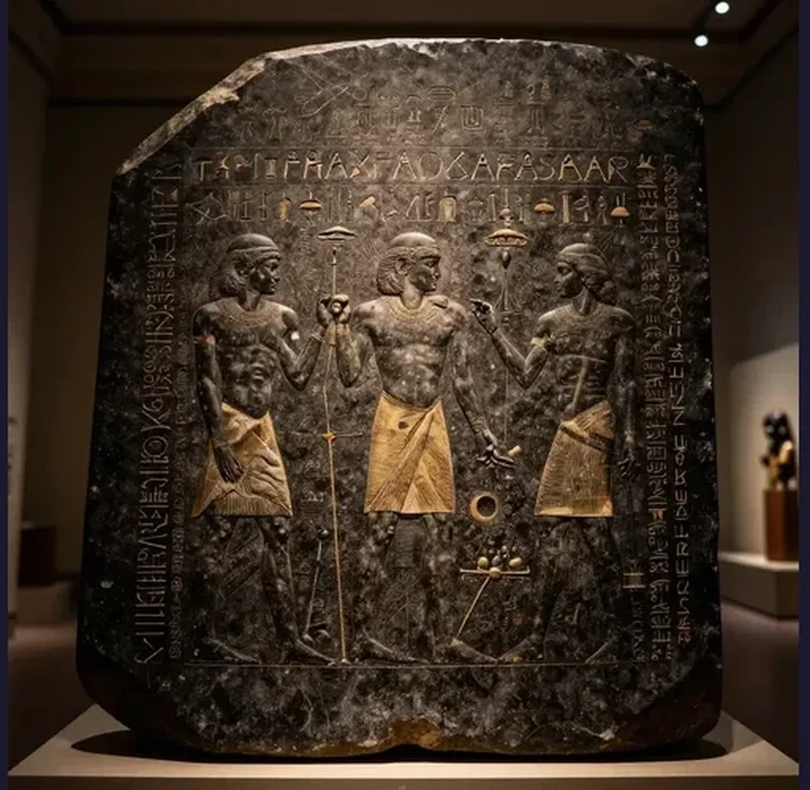

Rosetta Stone: How One Broken Slab Unlocked 3,000 Years of Lost Egyptian History

It is, by any objective measure, not much to look at — a broken slab of dark, speckled stone, roughly the size of a coffee table, its surface covered in three bands of tightly packed script that most visitors to the British Museum cannot read. Yet this unassuming artifact is arguably the single most important object in the history of archaeology, a piece of rock that unlocked 3,000 years of lost Egyptian civilization and opened an entire ancient world to modern understanding. The Rosetta Stone is a fragment of a granodiorite stele inscribed in 196 BCE with a priestly decree affirming the royal cult of the young pharaoh Ptolemy V Epiphanes. What makes it extraordinary is that the decree is written in three scripts: ancient Egyptian hieroglyphics (the sacred script of the priests), Demotic (the everyday script of the Egyptian people), and Ancient Greek (the language of the ruling Ptolemaic administration). For 1,400 years, since the last hieroglyphic inscription was carved at the island of Philae in 394 CE, the language of ancient Egypt had been utterly unreadable — a silent cipher guarding the secrets of one of humanity’s greatest civilizations. The Rosetta Stone provided the key.
The story begins with Napoleon Bonaparte’s Egyptian Campaign of 1798–1801. Napoleon invaded Egypt with both a massive army and a corps of 167 scientists, engineers, and scholars whose mission was to study and document every aspect of Egyptian civilization. In mid-July 1799, French soldiers under the command of Captain Pierre-François Bouchard were demolishing an old wall within Fort Julien, near the town of Rashid (known to Europeans as Rosetta), approximately 35 miles northeast of Alexandria. As the wall came down, the soldiers noticed a flat slab of dark stone with writing on its polished face. Bouchard, recognizing that the stone bore three distinct scripts — one of which was clearly Greek — immediately understood its potential significance and reported the find to his superiors. The discovery was announced in the Courrier de l’Égypte, the official French periodical in Cairo, where an officer wrote prophetically that the stone “is of great interest for the study of hieroglyphic characters; maybe it will even prove to be the key to understanding them.”
The stone itself is a fragment — only a portion of what was originally a much larger stele. It measures approximately 114.4 centimeters (45 inches) high, 72.3 centimeters wide, and 27.9 centimeters thick, and weighs about 760 kilograms (1,676 pounds). It is made of granodiorite, a coarse-grained igneous rock similar to granite. The top right corner and the bottom right corner are broken away, and the hieroglyphic section at the top is the most damaged, with only 14 lines surviving of what may have been 29 or more. The Demotic section has 32 lines, and the Greek section has 54 lines. The inscription records a decree passed by a council of Egyptian priests at Memphis in 196 BCE, during the reign of the boy-king Ptolemy V, who had ascended to the throne as a child and was now being recognized as an adult ruler. The decree lists the king’s benefactions to the temples and priesthood and orders that it be inscribed in three scripts and erected in temples throughout Egypt.
The Rosetta Stone’s path from an Egyptian fort wall to a glass case in the British Museum is a story of war, diplomacy, and imperial ambition. After the French fleet was destroyed by the Royal Navy at the Battle of the Nile in August 1798, Napoleon returned to France, leaving his army stranded. When the British defeated the French at Alexandria in 1801, the terms of the Treaty of Alexandria required the French to surrender all antiquities and scientific collections they had gathered. General Jacques-François Menou, who had taken personal possession of the stone, initially resisted, arguing it was his private property. After negotiations, the stone was handed over to Colonel Tomkyns Hilgrove Turner of the British Army, who transported it to England. The stone arrived in Portsmouth in February 1802 and was presented to King George III, who donated it to the British Museum. It has remained there ever since — with one notable exception during World War I, when it was moved to an underground station for protection against German bombing raids.
The decipherment was not the work of a single genius in a single moment — it was a long, grueling intellectual struggle spanning more than two decades. In 1801, the French Orientalist Silvestre de Sacy attempted to read the Demotic text by comparing it with the Greek, identifying a few proper names. The Swedish diplomat Johan David Åkerblad went further, correctly identifying several Demotic signs as alphabetic characters — but he mistakenly believed that all Demotic signs were alphabetic, when in fact the script also used ideographic and determinative signs.
The crucial breakthroughs came from two men working independently. Thomas Young (1773–1829) was a British physician, physicist, and polymath who made foundational contributions to optics and mechanics alongside his linguistic work. In 1814, Young began studying the Rosetta Stone inscriptions. His most important insight was recognizing that the cartouches — oval enclosures around certain groups of hieroglyphic symbols — contained royal names. He identified the name “Ptolemy” in the hieroglyphic text by matching it to the Greek version, and later identified “Berenice” as well. Young also demonstrated, for the first time, that hieroglyphics were not purely symbolic or allegorical — as scholars had believed for centuries — but could represent phonetic sounds. He published his findings in a landmark article in the 1819 supplement to the Encyclopædia Britannica.
The man who completed the decipherment was Jean-François Champollion (1790–1832), a French linguist who had been fascinated by ancient Egypt since childhood. A prodigy who had mastered Latin, Greek, Hebrew, Arabic, Syriac, Chaldean, Chinese, Coptic, Ethiopic, Sanskrit, Persian, and Amharic by the age of sixteen, his deep knowledge of Coptic — the final stage of the Egyptian language, written in Greek characters — proved to be the decisive advantage. Building on Young’s identification of cartouches and phonetic signs, Champollion focused on royal names. He started with “Ptolemy” and then turned to a second cartouche from an obelisk at Philae that he deduced contained the name “Cleopatra” — a name that shared several letters with “Ptolemy.” By comparing the shared signs between the two cartouches, Champollion established the phonetic values of multiple hieroglyphic characters.
Champollion’s greatest insight went beyond phonetic matching. He recognized that hieroglyphics were a mixed system — combining phonetic signs (representing sounds), ideographic signs (representing ideas), and determinative signs (clarifying meaning) — a system of extraordinary complexity and beauty. On September 27, 1822, Champollion burst into his brother’s office at the Académie des Inscriptions et Belles-Lettres in Paris and reportedly shouted “Je tiens mon affaire!” (“I’ve got it!”) before collapsing from exhaustion. He presented his findings in the famous “Lettre à M. Dacier,” which laid out the principles of the hieroglyphic system for the first time. In 1824, he published the comprehensive “Précis du système hiéroglyphique des anciens Égyptiens,” which established the field of Egyptology as a modern academic discipline. Champollion’s achievement cannot be overstated: he opened a door to 3,000 years of human history that had been sealed since the fall of the Roman Empire.
The decipherment did more than translate a single ancient document — it unlocked an entire civilization. Before Champollion’s breakthrough, the temples, tombs, and monuments of ancient Egypt were covered in beautiful but incomprehensible symbols. After Champollion, the vast corpus of Egyptian literature — religious texts like the Book of the Dead, historical inscriptions, medical papyri, mathematical treatises, personal letters, and administrative records — became accessible for the first time in over a millennium. The Rosetta Stone is not unique — it is one of several surviving copies of the Memphis decree of 196 BCE. Additional copies have been found at Philae, Elephantine, and Damanhur, some better preserved than the Rosetta Stone itself. The stone’s fame rests not on the uniqueness of its content but on its role as the first trilingual inscription discovered — the one that cracked the code.
The last known hieroglyphic inscription was carved on the island of Philae in southern Egypt on August 24, 394 CE — over 3,500 years after the script was first developed around 3200 BCE. The inscription was carved by a priest named Esmet-Akhom and is dedicated to the god Osiris. After this date, the knowledge of how to read and write hieroglyphics was lost for 1,408 years until Champollion’s breakthrough. The script was kept alive only by the Coptic Church, which continued to use the Egyptian language written in Greek characters for liturgical purposes — and it was Champollion’s knowledge of Coptic that ultimately enabled him to recognize the phonetic values of hieroglyphic signs.
In the modern era, the stone has become a focal point of the repatriation debate. In 2003, Zahi Hawass, then head of Egypt’s Supreme Council of Antiquities, formally requested the stone’s return to Egypt, arguing that it had been taken during colonial occupation and rightfully belonged in the land where it was created. The British Museum has declined, citing the stone’s universal cultural significance and the legal validity of the 1801 treaty. A replica now stands in Rashid at the site of its discovery — a reminder of what was lost and what remains abroad. The Rosetta Stone is, in the end, a broken slab of rock — a fragment of a bureaucratic decree affirming the divine status of a teenage king. But its impact has been nothing short of revolutionary. It gave us back 3,000 years of human history — the literature, the religion, the science, the daily life, and the monumental achievements of one of the greatest civilizations the world has ever known. It stands today in the British Museum, surrounded by visitors from every continent, a dark and unassuming stone that changed everything.
References & Further Reading
Wikipedia: Ptolemy V Epiphanes — The boy-king whose decree is inscribed on the stone
Wikipedia: British Museum — The museum where the Rosetta Stone has been displayed since 1802
📚 Recommended Reading: The Rosetta Stone and the Rebirth of Ancient Egypt by John Ray (on Amazon) — As an Amazon Associate, we earn from qualifying purchases.
Editorial note: The Rosetta Stone's history is documented through French military records, the publications of the Institut d'Égypte, the scholarly works of Thomas Young and Jean-François Champollion, and the archives of the British Museum. See our Editorial Policy.